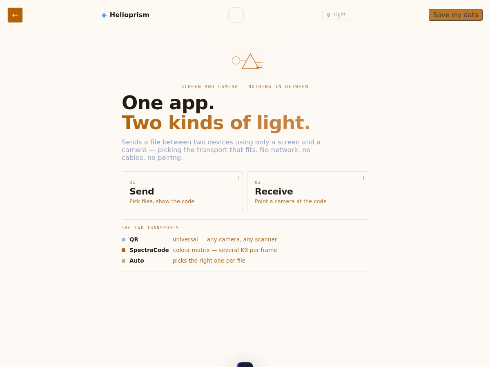

One app. Two kinds of light.
Helioprism moves a file between two devices using only a screen and a camera. It carries the same rateless frame stream over two transports and picks the right one for the job.
QR
- cells
- monochrome modules
- per frame
- ~1.4 KB
- best for
- small files, cheap optics, any scanner
SpectraCode
- cells
- 36 colours, 5 bits each
- per frame
- ~5.1 KB
- best for
- larger files
Both carry the same frame format and the same rateless fountain stream, so a missed frame costs one more symbol rather than a whole loop. The magic byte in each frame says which layer carried it, so the receiver auto-detects — you never choose a transport on the receiving end.
How it works
Pick the transport, or let it pick
Auto chooses by file size; you can force QR for a universal scan or SpectraCode for capacity.
Frames loop, order does not matter
The stream is fountain-coded, so frames are collected in any order and the transfer completes when enough have arrived.
The receiver decides
A magic byte in every frame names its layer. Point a camera at a loop and it works out which kind of light it is looking at.
The app

Support the work


Free to use, and it stays free
One person's work: no company, no ads, no tracking, no paid tier. If it saved you an afternoon, a contribution keeps the next one coming — any amount, or none.